← 返回阅读库 · 原论文目录
论文讲解阅读文档 · 多模态语言模型 · v028
Region-Aware Pretraining for Open-Vocab. Object Det. w ViT[2305.07011]
视频时长 00:08:10；讲解文字 3,919 字符；提取讲解画面 29 张。按视频原顺序阅读，每段文字保留时间戳。
文字来自整段视频的自动语音转写，按自然停顿分段，并与 PPT / 论文页面 / 演示画面对齐。未将讲解压缩为摘要；术语、数字和口述公式请结合画面及原论文核对。 阅读稿已校正规范部分明确术语误识别；原始逐字稿和每处修改记录另行保留。
讲解画面为源视频截图（640×360），不是可编辑 PPT 文件。全片按每秒 2 帧扫描内容变化，逐步展开页保留；连续动画保留代表画面。清晰度受源视频限制。
下载完整资料包 · 含离线 HTML、PDF、Word、全部 PPT 画面和字幕。
原论文与材料
Region-Aware Pretraining for Open-Vocabulary Object Detection with Vision Transformers · 下载完整 PDF（14 页）
按时间阅读
00:00:00–00:00:15 · 画面 001
 00:00:00–00:00:15 · 画面 001
00:00:00–00:00:15 · 画面 001大家好,今天我们来快速说一篇论文 Region-Aware Pretraining for Open Vocabulary Object Detection with Vision Transformers这一篇呢是一个力大砖飞的，教我们从头开始设计一个 open vocabulary 的 object detector。那么它的所在的背景呢，当然还是我们在 CLIP 为代表这个 vision language model，他们还是处在一整张图像只提一个 embedding 和它对应的文本的 embedding 做匹配的这么一个阶段，这么一个背景。那么我们如何在这种设计的基础上去让我们的模型能够做更细层次的 region level 的
00:00:15–00:00:51 · 画面 002
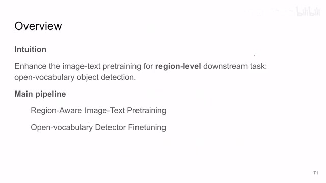
00:00:15–00:00:51 · 画面 002这样的一个 object detection 呢？那么本文提供的思路呢，就是还是两步走。第一步呢，就是我们先自己训练一个 vision language model。训练的时候呢，我们希望这个网络更加注重图像中的区域。那么第二步呢，就是在这个 pretrain 好的 model 上面我们做 fine-tuning 来得到一个最终的 detector。我们直接来看
00:00:51–00:00:52 · 画面 003
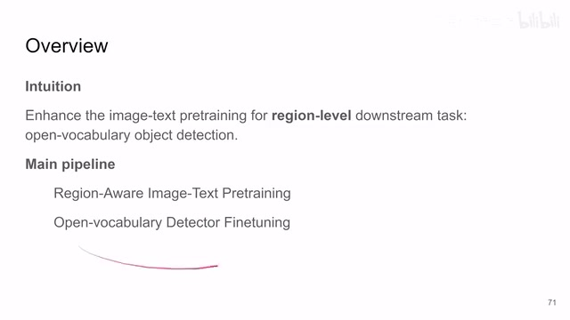
00:00:51–00:00:52 · 画面 00300:00:52–00:00:55 · 画面 004
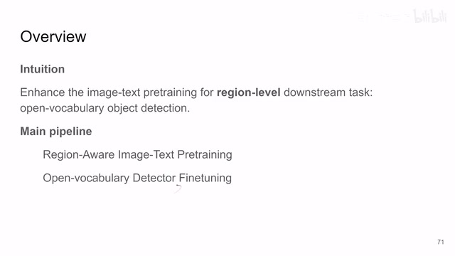
00:00:52–00:00:55 · 画面 00400:00:55–00:01:05 · 画面 005
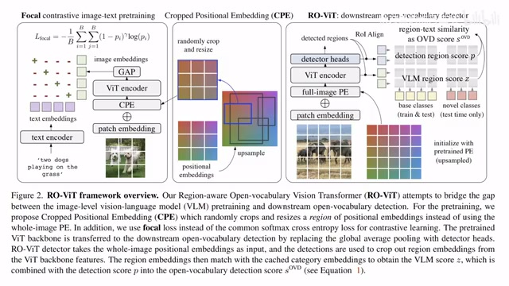
00:00:55–00:01:05 · 画面 005这个是本文的架构，我们看到两部分从这里分开，左边一块讲的是 Pretraining，右边一块讲的是 Fine-tuning。我们直接先来看 Pretraining 这一块
00:01:05–00:02:09 · 画面 006
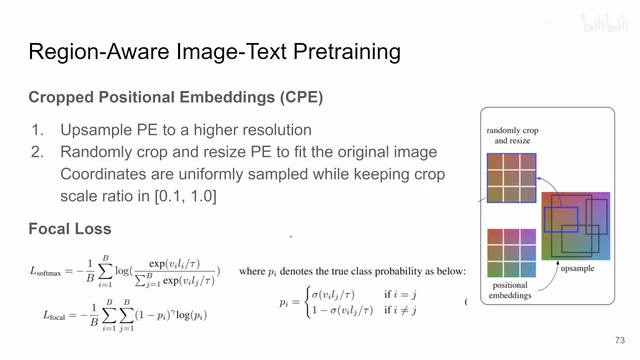
00:01:05–00:02:09 · 画面 006pretraining 这块其实主要有两个大的技术的要点，一个是 cropped positional embedding CPE，再一个它用的是 focal loss。我们主要看它这个 CPE 的使用。我们因为知道下游任务是做 object detection，所以我们就希望我们的模型去注重图像中的某一个局部的区域。在这个区域里面提一个 feature，这是一个符合直觉的设计但是我们如何在 pretrain 的这个阶段让模型去注意到一个小的区域呢？那你直接去想肯定就是我一张图里面我随机的切出一块来，然后作为我的训练样本，怎么样怎么样怎么样。但是呢，它就存在一个问题，如果这个物体它非常小，你本来图的分辨率就不大，你切出来一块你再缩放或者怎么样
它就不那么合适也不太优雅那么本文的一个思路呢就所谓大山不向穆罕默德走来穆罕默德便向大山走去它不是通过更改图像本身而是它默认说我所有的输入的图像我训练集中的图像都是存在一个虚拟的一个大的图像中的一个 patch 然后呢每次我训练的时候呢我先生成一个 positional embedding 那么这个 positional embedding 呢
00:02:09–00:02:10 · 画面 007
00:02:09–00:02:10 · 画面 00700:02:10–00:03:06 · 画面 008
00:02:10–00:03:06 · 画面 008对是一个比我们输入图像大得多的一个不存在的虚拟的图像。而我们假设我们输入的训练的图像就是虚拟的图像中任意一个位置中的一个小块。这样子我们就避免了对原始的图像进行裁切，而更好地利用我们已经有的数据那我现在已经初始化了一个大的 positional embedding。我现在呢，只需要随机在里面画出一个框来，我就说我的这个训练的这张图片就是在这个大的图像中的这个框里面这个位置。那么换成你模型能懂的语言呢，就是你只取这个框里面的 positional embedding 加到你的这个已经有的这个输入的图像上
就是在我加 positional embedding 的时候，不是加一个全局的 positional embedding，而是告诉我的模型说我的这张图像其实是来自一个广大的图像里面的一小部分。这样子呢，你就很自然的覆盖了不同的图像的尺度，图像中不同的位置。那么加上这个 positional embedding 对吧？你看到这里，然后过这个 encoder，然后 global average pooling 这边跟这个
00:03:06–00:03:22 · 画面 009
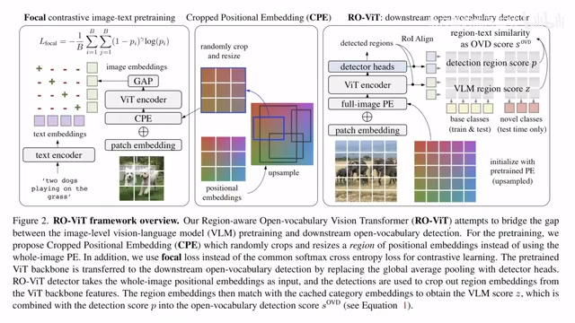
00:03:06–00:03:22 · 画面 009text encoder 做相似度，然后两个 embedding 算相似度和 clip 一样做 contrastive loss。但是这里具体用到的 loss 是 focal loss。它具体是什么，我们来看到这边是长这个样子
00:03:22–00:03:43 · 画面 010
00:03:22–00:03:43 · 画面 010可以看到这个里面 sigmoid 里面是相似度这个套就是那个 temperature 嘛你可以调整的那么这个呢是本文在 pre-training 的时候做的两个调整也就是本文最核心的技术贡献那么你拿上这个 loss 拿上你的文本图像的配对然后你就去训练就好了那么训练结束之后呢就得到一个 text encoder 还有一个 vision encoder 我们呢就可以做下一步的这个 fine-tuning 那么具体来说呢既然我们这次的目标是建一个 open vocabulary detector
00:03:43–00:03:50 · 画面 011
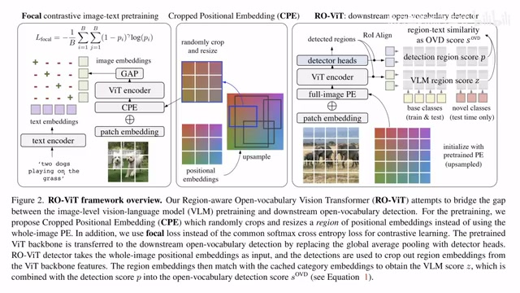
00:03:43–00:03:50 · 画面 01100:03:50–00:04:03 · 画面 012
00:03:50–00:04:03 · 画面 012那么在训练的流程上其实跟之前的方法也都是一样我们的数据集它始终是有限的我们会在这个数据集上训练然后在测试的时候我们不仅会测试 base 这个数据集里面的所有的 label 我们还去测试一些新的 label 就是这两个数据集的并
00:04:03–00:04:04 · 画面 013
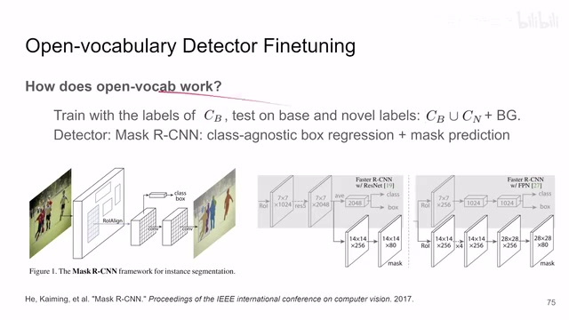
00:04:03–00:04:04 · 画面 01300:04:04–00:04:57 · 画面 014
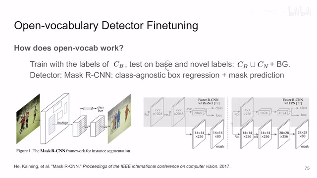
00:04:04–00:04:57 · 画面 014同时呢我们还会加上一个新的类叫做 background 有了它呢我们能把这些误报的这些 proposal 给它关掉那么为什么会有误报的 proposal 呢因为这里的 detector 呢沿用的是这个 Mask R-CNN 它的构架那么这个东西呢它是一个两阶段的对吧你熟悉 fastrcnfastrcn 这些东西它第一个阶段会有一个 proposal network告诉你这个图像里面哪些区域可能是我们想要的物体然后呢你在这些 proposal 上做 classification 也好做它具体的这个 bounding box 具体的 mask 的分割也好
那么这个呢是 Mask R-CNN 那么本文呢沿用了这个构架所以呢这里需要一个新的这个 background 类那么在这个基础上呢本文有两个小的改进当然这个改进也不是新的也不是说本文的贡献那么第一个呢就是这个你在算这个 proposal 的时候原来呢我们都是用一个这个二分类的一个分类器来看啊你觉得这个区域的 feature 它像不像一个物体
00:04:57–00:05:28 · 画面 015
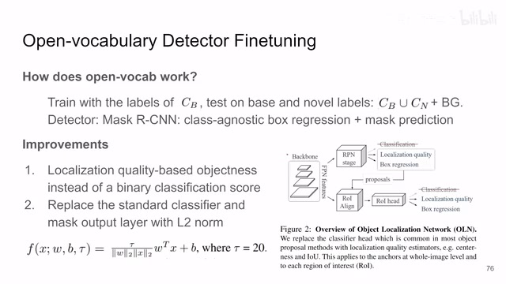
00:04:57–00:05:28 · 画面 015那么这种方法呢对不是 open vocabulary 的情况你知道所有的 label 的情况下它是可用的那你现在这个情况你不知道你可能会分出什么 label 出来那么在这里呢作者把它替换成了一个 localization quality 就是沿用了这个 object localization network 这个里面的设计那就是说我来看一看这个区域里面的东西我也不管它是什么东西了我就看它成不成型那么这个呢是作者的第一个改动
00:05:28–00:05:29 · 画面 016
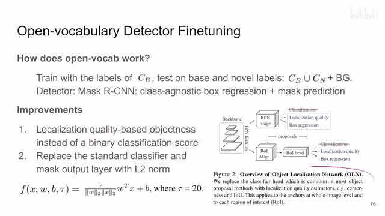
00:05:28–00:05:29 · 画面 01600:05:29–00:05:43 · 画面 017
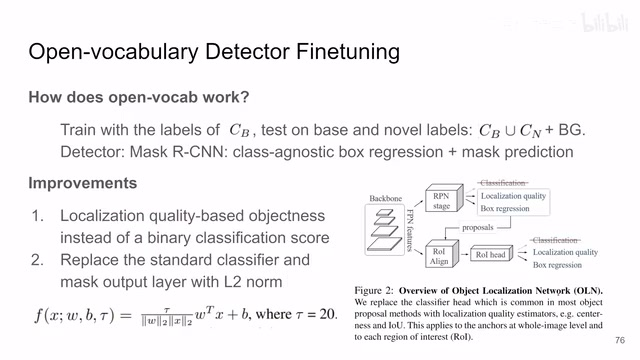
00:05:29–00:05:43 · 画面 017那么第二个改动呢就是把所有的 classifier 还有这个 mask output 这一块呢全部换成这种 layer normalization 的这个 linear layerw 是这一层的权重 b 是它的 bias 嘛那么 x 是这一层的输入也是一个很直接的设计那么在做了这些改动之后呢你就正常的去训练它就好了那你可以看到呢这边我们的这个 visual encoder 后面首先额外加这个 detector heads 就是那个 proposal network
00:05:43–00:05:44 · 画面 018
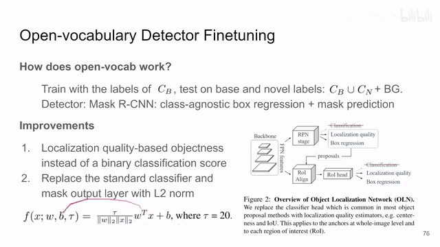
00:05:43–00:05:44 · 画面 01800:05:44–00:05:55 · 画面 019
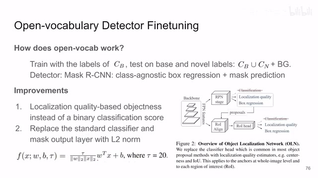
00:05:44–00:05:55 · 画面 01900:05:55–00:06:54 · 画面 020
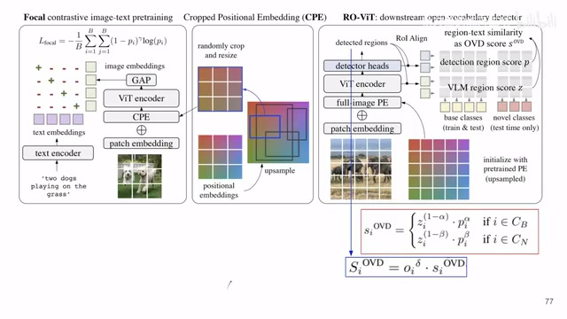
00:05:55–00:06:54 · 画面 020那么提出来的区域你再去做分类再去做 mask 的 prediction 就好了那么最终我们希望要给我们的输出的每一个物体我们有一个 confidence 我们有一个 score 就是我们有多确信这个结果这个 score 从哪里来本文里面分了三个部分一个就是你的 Vision Language Model 这个 patch 和你的 text embedding 它们的 similarity是怎么样的这个 score 这个是 z 在这里然后呢一个是你的 detector head 你在这里它会随着预测出一个分数来
那么这两个分数呢是按照这个式子结合在一起的这里的这个α呢是一个超参数给这些见过的类使用β呢是另一个超参数给这些没见过的类使用但是它们的公式呢是一样的然后呢你得到这个小的分数那这个分数呢作者还在前面成了一个 proposal network 它给出的确信的程度就是我们之前说到这个 localization quality 这个分数那么把它成在前面得到这个分数呢就是你最终的给每一个 object 的分数
00:06:54–00:06:58 · 画面 021
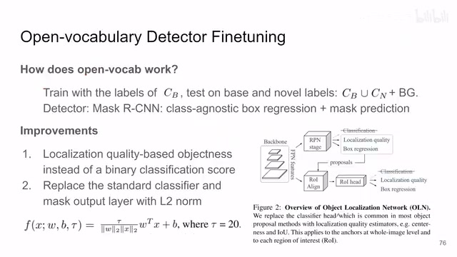
00:06:54–00:06:58 · 画面 02100:06:58–00:07:07 · 画面 022
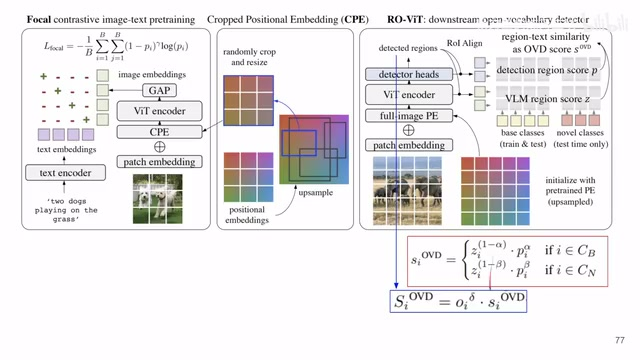
00:06:58–00:07:07 · 画面 022好的，那么以上就是本文主要的技术路线了。我们来看作者汇报的一些结果，首先是这个 open vocabulary object detection 一些好的数字。你看到他测了这个 LVIS 还有这个 COCO 这两个数据集。然后呢，我们再来看到他做了这个 image text retrieval，那就是来衡量我们 pre-training 的质量嘛，对吧？这是一些好的结果。
00:07:07–00:07:19 · 画面 023
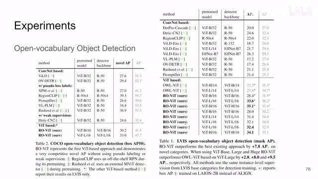
00:07:07–00:07:19 · 画面 02300:07:19–00:07:24 · 画面 024
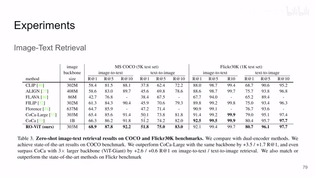
00:07:19–00:07:24 · 画面 02400:07:24–00:07:25 · 画面 025
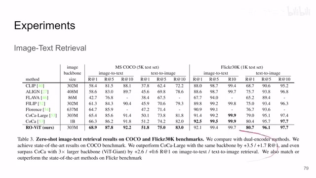
00:07:24–00:07:25 · 画面 02500:07:25–00:07:27 · 画面 026
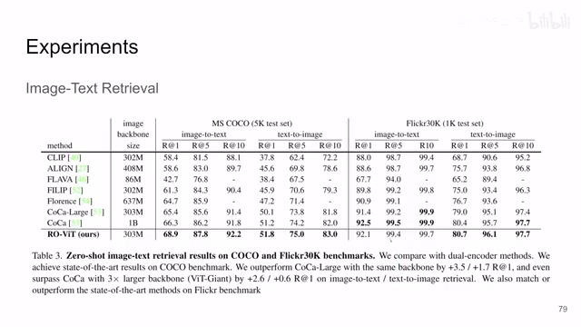
00:07:25–00:07:27 · 画面 026然后呢是 transfer learning，在迁移到其他数据集上可以用。然后这边呢就是一些 ablation，比如说一开始我们看到这个 pretrain
00:07:27–00:07:40 · 画面 027
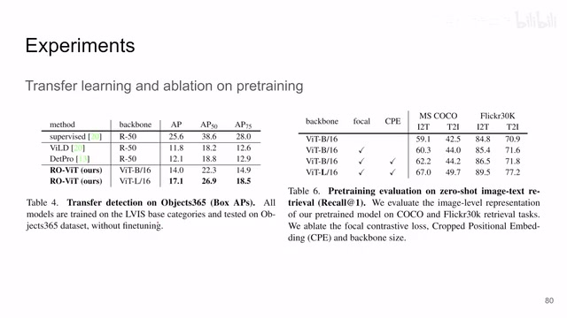
00:07:27–00:07:40 · 画面 027我们的 focal loss 的使用，CPE 的使用，他们做 retrieval 的这个效果在这里。那么这里呢有更多的 ablation，感兴趣的朋友呢非常推荐你到原文去看它的具体的设计。那么总的来说呢，本文就是核心的两个设计，一个是 CPE 的使用，这个可能是本文的最大的贡献了。然后呢使用的是 focal loss 而不是 softmax cross entropy 那些东西。那么这个呢就是本文的核心了，作者呢也只提供了这两个部分的代码。
00:07:40–00:08:09 · 画面 028
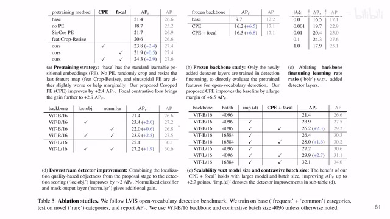
00:07:40–00:08:09 · 画面 028总的来说呢，还是这篇文章是一个力大砖飞的工作。那么以上就是我对这个文章的一个快速的整理。那么感谢您的收看，再见。
00:08:09–00:08:10 · 画面 029
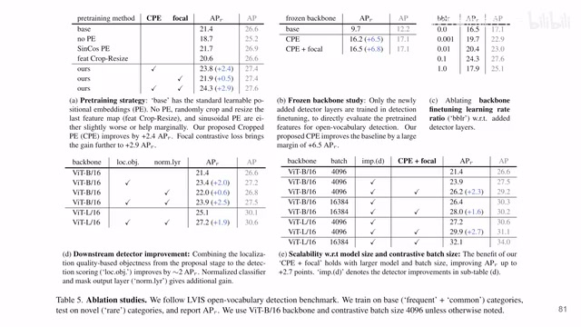
00:08:09–00:08:10 · 画面 029转写与来源说明 · 0 个自动复核提示
保留 25 个原始语音片段，0 个片段触发自动复核提示。提示仅用于定位可能的术语、重复或识别问题，不等于已确认错误。
讲解画面为源视频截图（640×360），不是可编辑 PPT 文件。全片按每秒 2 帧扫描内容变化，逐步展开页保留；连续动画保留代表画面。清晰度受源视频限制。
原视频：paper/合集_2026-10-16_多模态语言模型/[论文简析]Region-Aware Pretraining for Open-Vocab. Object Det. w ViT[2305.07011].mp4
SHA-256：7839c267a695fe7c164e02263f851559a8d01ee91493380e665acd8b53327628
全文按视频语音与画面制作。原论文可从上方链接下载；完整资料包保留全文、原始逐字稿、字幕和校对记录。